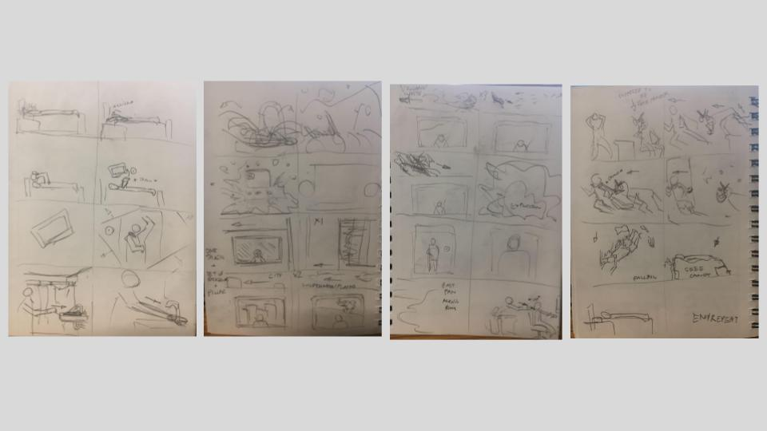
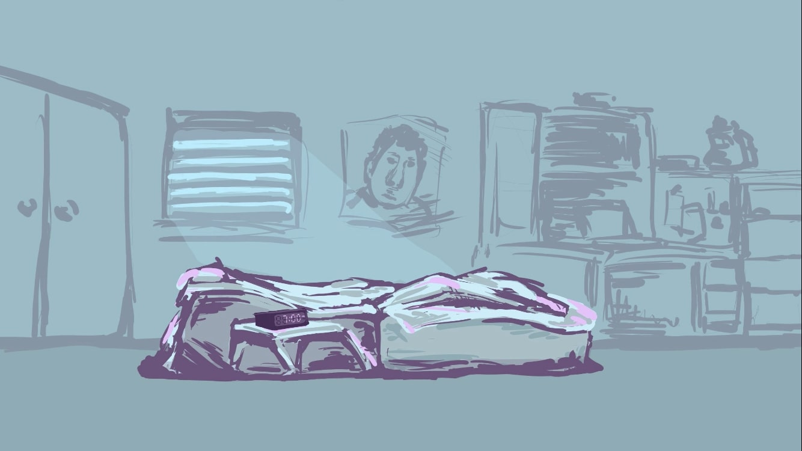
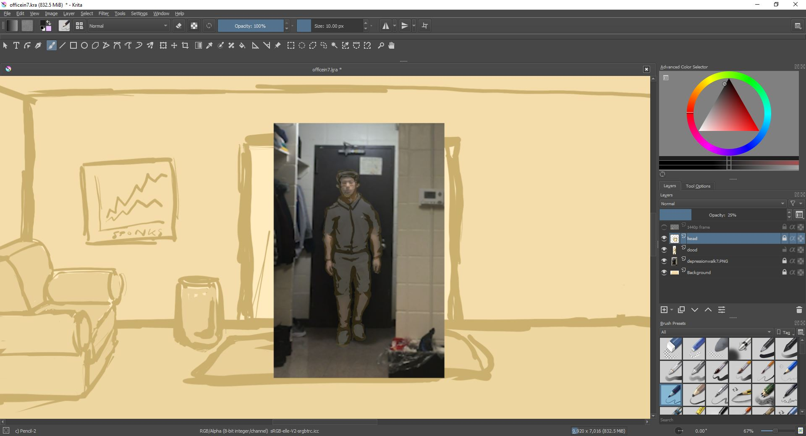
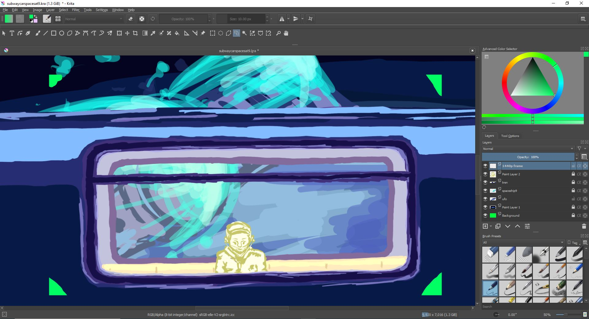
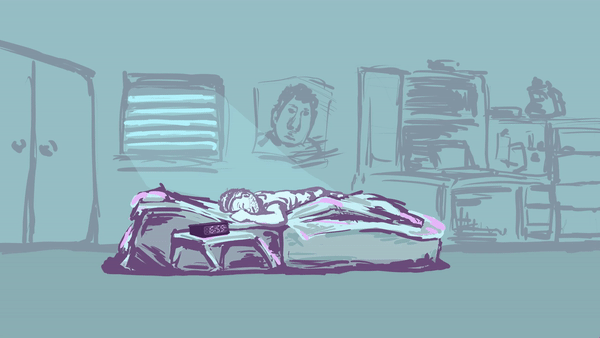

A short looping animation by Robert Qu and Brandon Chung
Daydream is a short, '60' second looping animation I worked on with a partner in October of 2021. The idea was inspired by our inability to focus on one idea alone, so we decided to create a story that was unpredictable and made little sense, similar to a daydream.
The Concept and Story

Original Storyboard
As mentioned, we could not focus on one idea alone, so we attempted to tie a number of them together into a story. We wanted to structure a story that started off as something that seemed tame and ordinary, but gradually ramped up in drama and action. As someone who grew up surrounded by animation, I wanted to create something as smooth as possible, thus the sole use of invisible cuts between scenes.
Character Designs - Various Poses and Expressions
Early Background Art

Protagonist's Bedroom
Designing the character was an important step in the project. I wanted to create someone who was ordinary but recognizable, so I tried to come up with certain simple yet signature design features, like the haircut and common expressions. I also wanted the color palette to contribute to the overall feel of each scene, emphasizing a dreamy effect.
The Frames

Rotoscoping a Walking Animation

Determining Frame Composition
Various Animation Cycles on a Background
There were many steps to creating each scene and assembling a working frame by frame animation. One of the greatest challenges of this project was creating smooth animation with movement that felt natural. To work around this issue, I recorded videos of my partner and I performing the various actions I was hoping to recreate. Then, I would either rotoscope the scenes or draw the frame with reference to the video. Some animations were loops, such as walk cycles. I also set up frames and positioned objects to their correct positions to make editing and aseembly of the footage easier.
The Frames

Unedited frame by frame animation of the first scene
To further improve my work, I would often test my frames by assembling them in Adobe Animate, where I would make sure the movement felt natural and the framing was correct. Certain frames also had separate props or green screens on different layers to make editing easier.
After I finished the drawing and basic positioning for each scene, my partner would then edit the footage, adding effects and refining the animation quality.
Final Product
For looping effect, right click and select "loop"
The final animation ended up following the original script very faithfully, and the overall process went relatively smoothly. Although the frame by frame drawings could use further editing and refinement, we were able to solve the major logistical hurdles, and were able to create the project we hoped to.